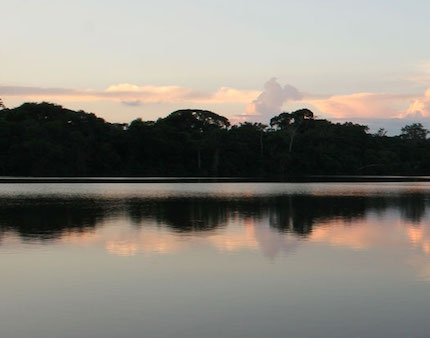

Acerca de SKY Airline Modificado
Fundada en Chile en 2001, SKY busca poner el cielo al alcance de todos y todas. ¡Conócenos más!
1RA SECCION
Fundada en Chile en 2001, SKY busca poner el cielo al alcance de todos y todas. ¡Conócenos más!
Fundada en Chile en 2001, SKY busca poner el cielo al alcance de todos y todas. ¡Conócenos más!
Fundada en Chile en 2001, SKY busca poner el cielo al alcance de todos y todas. ¡Conócenos más!
Fundada en Chile en 2001, SKY busca poner el cielo al alcance de todos y todas. ¡Conócenos más!
Fundada en Chile en 2001, SKY busca poner el cielo al alcance de todos y todas. ¡Conócenos más!
3RA SECCION

Desde Cusco
Economy
Precio desde
USD 35.00
USD 25.87 -26%
PEN 86.92
Tasas incluidas